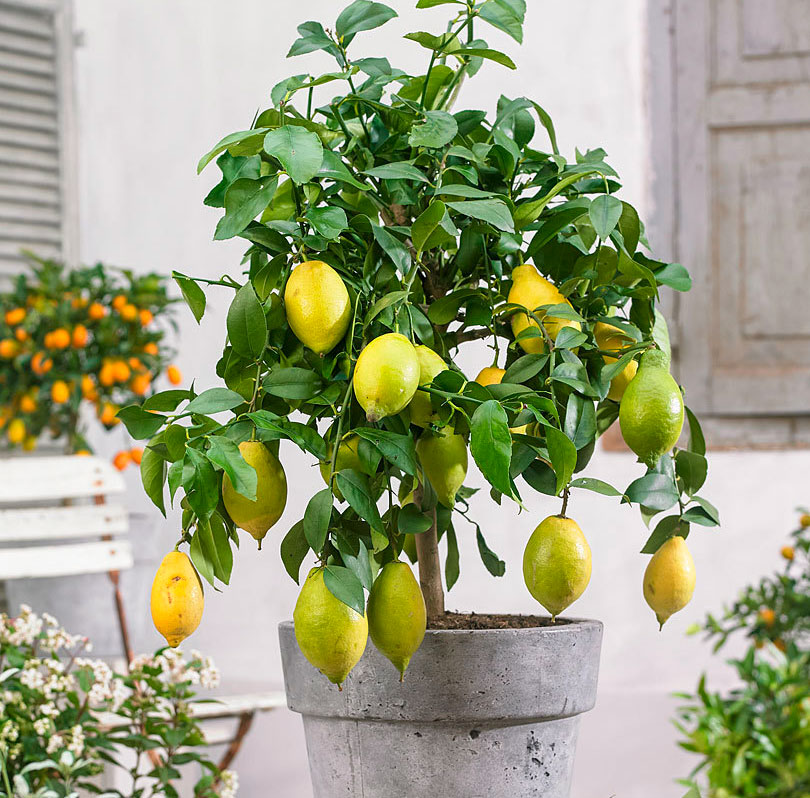

Цитрус-лемон
Лимо́н — штучний гібрид фруктових дерев роду цитрус (Citrus); також терміном «лимон» називають плід цього дерева.
Харчова, ароматична, декоративна культура. Плоди використовуються для кулінарних цілей, в першу чергу його сік та цедра використовуються, в основному, в кулінарії та приготуванні кондитерських виробів.
Лимонний сік містить від 5 % до 6 % лимонної кислоти, яка дає лимону кислий смак. Існує багато напоїв та цукерок з лимонним ароматом, в тому числі лимонад. Характерний кислий смак лимонного соку робить його ключовим інгредієнтом багатьох страв по всьому світу.

При вирощуванні лимонні дерева вимагають відстані близько 7 м один від одного, при чому продуктивність падає у зарослих садах. Дерева обрізають в молодому віці і дотримуються висоти до 3-4 м. Кожні 10-12 років піддаються значному обрізанню або замінюють на нові. Вимагають прополювання від бур'янів, гербіциди негативно впливають на лимонні дерева.
Через майже безперервний ріст лимони чутливі до холоду і важко відходять від заморозків. При температурі нижче −4 °C дерево скидає листя, а при температурі нижче −7°С відбуваються серйозні пошкодження дерева. Квіти та дрібні плоди гинуть при температурі нижче 0ºС, а стиглі плоди пошкоджуються при −2°С. З іншого боку лимони добре переносять прохолодне літо, на відміну від апельсинів, які в таких умовах не можуть повністю достигнути. Загальна чутливість до холоду, однак, дозволяє лимонним деревам рости за межами вузької кліматичної зони.
З точки зору вологості, лимонні дерева переносять як суху, так і вологу погоду, але під час тривалої посухи, лимони слід поливати.
Вимоги до ґрунту у лимонних дерев невисокі: вони можуть рости на бідних ґрунтах, втому числі на піщанистих і глинястих.
Лимони легко розводити з насіння. Деякі з різновидів (Мейєр) здатні розмножуватися живцями від дорослих дерев. Таким чином посаджені лимонні дерева починають плодоносити на 2-3 роки раніше, ніж дерева, вирощені з насіння, та здатні давати урожай протягом 30 років.
Основні біологічно активні речовини м'якоті плодів лимону це лимонна кислота (до 10 %), аскорбінова кислота (до 100 мг і вище), вітаміни групи В, каротиноїди, флавоноїди, цукри. Кумарини сконцентровані переважно у шкірці, крі того, шкірка містить значні кількості гесперидину. У білому внутрішньому шарі під поверхневою шкіркою переважають пектини. Плоди багаті на калій. У складі ефірної олії (яка міститься переважно у поверхневій частині шкірки) близько 70 % лимонену, до 6 % цитралю, геранілацетат та інші компоненти. Фармакологічна активність лимонної кислоти, ефірної олії, флавоноїдів — протимікробна, вітаміни і мінеральні речовини виявляють полівітамінну і загальнозміцнювальну дію. Ефірну олію застосовують в ароматерапії як заспокійливий та гіпотензивний засіб. Наукове дослідження, яке було проведене дослідниками з Університету штату Огайо, показало, що лимонний аромат олії, використовуваного в ароматерапії не впливає на імунну систему людини, але покращує настрій.[22] Розбавлений сік лимона стимулює утворення жовчі, звільняє організм від кальцієвих відкладень при метаболічних артритах, подагрі, регулює масу тіла, зменшує ймовірність закрепів. Позитивно впливає на стан щитоподібної залози.[23] Низький рівень рН соку лимона робить його антибактеріальним. Сік або мякоть плоду рекомендують при застудних захворюваннях невеликими порціями впродовж дня. Одночасно з'їдати весь лимон, тим більше кілька, небажано. По-перше, велика кількість досить сильної кислоти не може бути швидко нейтралізована всередині організму і залишається сильним подразником для слизової оболонки травного каналу, а також підшлункової залози. По-друге, аскорбінова кислота, навіть природна, у високих дозах виявляє властивості прооксиданту, і лише пізніше, поширюючись по організму і набуваючи фізіологічної концентрації, виявляє властивості антиоксиданту.
Гіркоти, що містяться в шкірці та перетинках, сприяють травленню, а ефірні олії та полісахариди запобігають бродильним процесам у кишківнику.